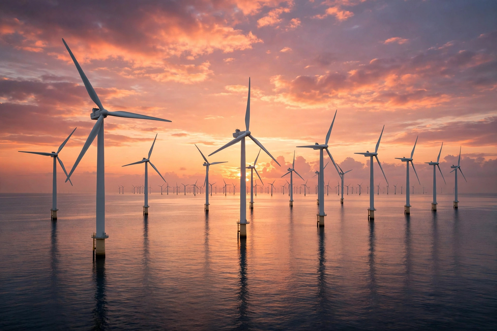

Wind power

[Image: Photograph of an offshore wind farm at sunset, rows of white turbines in the sea]
Wind power is the use of wind turbines to generate electricity. A major and fast-growing source of renewable energy, it converts the kinetic energy of moving air into electrical energy through rotor blades driving a generator, onshore and offshore.
Technology
Modern turbines are usually three-bladed, horizontal-axis machines on tall towers, grouped into wind farms. Capacity has grown steadily — the largest offshore turbines exceed 14 MW — and costs have fallen to make wind among the cheapest sources of new electricity in many regions. Output varies with the weather, so grids combine wind with storage, interconnection and other generation.
History and scale
Wind has been harnessed for millennia in sailing ships, windmills and wind pumps. Electricity generation began in the late 19th century and expanded greatly from the 1970s, led early on by Denmark. China, the United States and Germany are among the largest producers, and wind now supplies a substantial share of electricity in several countries, over half of Denmark's in some years.